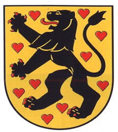

Antavla
4088024758 Greve Siegfried III von Weimar-Orlamunde
Greve av Weimar-Orlamunde. Blev ca 51 år.

Far:
Herman I von Weimar-Orlamunde
Född:
omkring 1155.
[1]
Död:
1206.
[1]
Barn med
4088024759 Prinsess Sofie av Danmark (1161 - 1208)
Barn:
Sophie von Orlamunde (1180? - 1244)
Personhistoria
Årtal
Ålder
Händelse
1155?
Födelse omkring 1155
[1]
1161
Partnern
4088024759 Prinsess Sofie av Danmark
föds 1161 Roskilde, Danmark
1180?
Dottern
2044012379 Grevinnan Sophie von Orlamunde
föds omkring 1180 Orlamunde, Thyringen, Tyskland
1206
Död 1206
[1]
Källor
[1]
Wikipedia